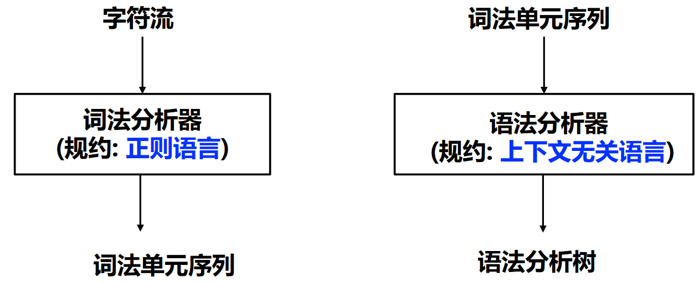

CFG 及语法分析概述¶
约 3122 个字 3 行代码 预计阅读时间 10 分钟
上下文无关文法¶
CFG 简介¶
上下文无关是什么意思？
\(\alpha A \beta \Rightarrow \alpha \gamma \beta\) 在文法推导的每一步，符号串 \(\gamma\) 仅根据 \(A\) 的产生式推导，无需依赖 \(A\) 的上下文 \(\alpha\) \(\beta\)
基本作用：指定编程语言的语法结构
CFG 定义的方式和计算理论所讲的形式略不同，符号需要注意一下
一个上下文无关文法 \(G\) 是一个四元组 \(G = (T, N, P, S)\)
- \(T\) 是终结符号集合 (Terminal)
- \(N\) 是非终结符号集合 (Non-terminal)
- \(P\) 是产生式集合 (Production): e.g., \(A \rightarrow \alpha, A \in N, \alpha \in (T \cup N)^*\)
- \(S\) 是开始符号 (Start symbol): \(S \in N\)
至于性质，可以参考计算理论的内容，这里不再赘述
在这里的 CFG 中，我们使用 EOF Marker \(\$\) 来表示输入串的结束，必须位于完整的 \(S\) 之后，可以通过添加一个新的开始符号 \(S' \rightarrow S \$\) 来实现
此外，对于一组有相同左部的 \(\alpha\) 产生式 $$ \alpha \rightarrow \beta_1, \alpha \rightarrow \beta_2, \ldots, \alpha \rightarrow \beta_n $$ 可以简写为 $$ \alpha \rightarrow \beta_1 | \beta_2 | \ldots | \beta_n $$ 读作：\(\alpha\) 定义为 \(\beta_1\)，或者 \(\beta_2\) ...，或者 \(\beta_n\)
\(\beta_i\) 称为 \(\alpha\) 的候选式 (Candidate)
推导和规约¶
给定文法 \(G = (T, N, P, S)\)
- 直接推导/规约
- 直接推导：把产生式看成重写规则，把符号串中的非终结符用其产生式右部的串来代替
- 如果 \(A \rightarrow \gamma \in P\)，且 \(\alpha, \beta \in (T \cup N)^*\)，则称串 \(\alpha A \beta\) 直接推导出 \(\alpha \gamma \beta\)，记作 \(\alpha A \beta \Rightarrow \alpha \gamma \beta\)
- 直接规约：如果 \(\alpha A \beta \Rightarrow \alpha \gamma \beta\)，则称 \(\alpha \gamma \beta\) 直接规约为 \(\alpha A \beta\)
- 直接推导：把产生式看成重写规则，把符号串中的非终结符用其产生式右部的串来代替
- 多步推导/规约
- 多步推导：如果 \(\alpha_0 \Rightarrow \alpha_1, \alpha_1 \Rightarrow \alpha_2, \ldots, \alpha_{n-1} \Rightarrow \alpha_n\)，则可以记作 \(\alpha_0 \Rightarrow \alpha_1 \Rightarrow \alpha_2 \Rightarrow \ldots \Rightarrow \alpha_n\)，称符号串 \(\alpha_0\) 经过 \(n\) 步推导出 \(\alpha_n\)，可简记为 \(\alpha_0 \Rightarrow^n \alpha_n\)
- 此外，可以使用
- \(\Rightarrow^*\) 表示若干（可以是 0）步推导
- 使用 \(\Rightarrow^+\) 表示至少一步推导
- 最左推导/规约
- 最左推导 (Left-most Derivation)：每步代换最左边的非终结符
- 如果 \(S \Rightarrow^*_{lm} \alpha_0\)，则称 \(\alpha_0\) 是当前文法的最左句型 (left-sentential form)
- 在自顶向下的语法分析中，总是采用最左推导的方式

- 最右推导/规约
- 最右推导 (Right-most Derivation)：每步代换最右边的非终结符
- 在自底向上的分析中，总是采用最左归约的方式

产生式和推导的表示
龙书区分了 \(\rightarrow\) (Production Rule)和 \(\Rightarrow\)（推导），但是虎书似乎在表达推导时直接用了 \(\rightarrow\)
看起来还是龙书比较符合计算理论的常用符号，这里统一使用龙书的表示
句型、句子和语言¶
- 句型 (Sentential Form)：对开始符号为 \(S\) 的文法 \(G\)，如果 \(S \Rightarrow^* \alpha, \alpha \in (T \cup N)^*\)，则称 \(\alpha\) 是文法 \(G\) 的一个句型
- 句型中既可以包含终结符，又可以包含非终结符，可以是空串（在虎书中直接用空格代表空串，如 \(X \rightarrow \space\)，但是龙书会用 \(\epsilon\) 来表示空）
- 句子 (Sentence)：如果 \(S \Rightarrow^* w, w \in T^*\)，则称 \(w\) 是文法 \(G\) 的一个句子
- 句子是不含非终结符的句型
- 仅含终结符号的句型是一个句子
- 语言 (Language): 由文法 \(G\) 推导出的所有句子构成的集合称为文法 \(G\) 的语言，记作 \(L(G)\)
- \(L(G) = \{w | S \Rightarrow^* w, w \in T^*\}\)
句型和句子
考虑文法 \(E \rightarrow E + E | E * E | (E) | -E | \textbf{id}\)，其中 \(\textbf{id}\) 表示标识符，为终结符号
存在如下的推导序列
则其中：
- \(-(\textbf{id} + \textbf{id})\) 是文法的一个句子
- \(-(\textbf{id} + E)\) 是文法的一个句型
输入串的判定¶
给定 CFG，如何判定输入串属于文法规定的语言？
有两个角度可以考虑：
- 从生成语言的角度
- 句子的推导（派生）
- 从开始符号能推导出该词串
- 从识别语言的角度
- 句子的归约
- 从词串能归约出开始符号
RE 和 CFG¶
为什么词法和语法分析用不同形式语言？
语法分析和词法分析的比较¶

事实上，我们可以推出：
正则文法 (Regular Grammar)¶
通过将正则语言进行形式文法刻画，我们可以得到正则文法 (Regular Grammar) 的定义： $$ G = (T, N, P, S) $$ 其中：
- \(T\) 是终结符号集合
- \(N\) 是非终结符号集合
- \(P\) 是产生式集合，形式如下：
- 右线性文法：\(\alpha \rightarrow \beta\) 形如 \(A \rightarrow \alpha B\) 或 \(A \rightarrow \alpha\)，其中 \(A, B \in N, \alpha \in T \cup \{\epsilon\}\)
- 左线性文法：\(\alpha \rightarrow \beta\) 形如 \(A \rightarrow B \alpha\) 或 \(A \rightarrow \alpha\)，其中 \(A, B \in N, \alpha \in T \cup \{\epsilon\}\)
- \(S\) 是开始符号，\(S \in N\)
正则语言是右线性文法/左线性文法产生的所有句子的集合
为什么词法分析用正则表达式，不用正则文法？
正则表达式描述简洁（刻画Token），且易于理解

正则语言 vs 上下文无关语言
每个正则语言都是一个上下文无关语言，反之不成立
- 从文法角度，对产生式 \(\alpha \rightarrow \beta\) 形式的限制不同
- 上下文无关文法：左部 \(\alpha\) 是一个非终结符号，右部是一个符号串（包括终结符号和非终结符号）
- 正则文法：右线性文法和左线性文法的限制
- 从实用角度, 正则语言表达能力有限，难以刻画编程语言的语法
- 如不能用于描述配对或嵌套的结构，实例包括配对括号串的集合，e.g., \((^n)^n, n \geq 1\)
- 原因在于有穷自动机无法记录访问同一状态的次数
词法分析和语法分析的分离¶
- 为什么用正则语言定义词法
- 词法规则非常简单，不必用上下文无关文法
- 对于 Token，正则表达式描述简洁且易于理解
- 从正则表达式构造出的词法分析器效率高
- 分离词法分析和语法分析的好处
- 简化设计、提升性能
- 编译器的可移植性加强
- 便于编译器前端的模块划分
*形式文法的分类
Chomsky 在 1956 创立了形式语言学，并将形式语言的文法分为四类：
- 0 型文法（短语结构文法）：递归可枚举语言
- \(\alpha \rightarrow \beta\), \(\alpha, \beta \in (T \cup N)^*, \left| \alpha \right| > 1\)
- 1 型文法（上下文有关文法）
- \(\left| \alpha \right| \leq \left| \beta \right|\)，但 \(S \rightarrow \epsilon\) 可以例外
- 2 型文法（上下文无关文法）
- \(\alpha \rightarrow \beta\), \(\alpha \in N, \beta \in (T \cup N)^*\)
- 3 型文法（正则文法）
*CFL-Reachability
结合 CFG 和图可达性，可以用于分析程序语义，如类型推导、指针分析、数据流分析等
具体实例如 LLVM 内部的 cfl-aa
语法分析概述¶
CFG 的 Parse Tree¶
分析树 (Parse Tree) 是推导的图形化表示，具有下面性质：
- 根结点为文法的初始符号
- 每个叶子结点是一个终结符
- 每个内部结点是一个非终结符
- 每一个父结点和他的子结点构成一条产生式
Parse Tree 构造
- 文法 \(E \rightarrow E + E | E * E | (E) | \textbf{id}\)
- 串 \(\textbf{id} * \textbf{id} + \textbf{id}\)
语法分析作为搜索问题¶
语法分析的核心问题：对于一个终结符号串 \(x\)
- 设法从 \(S\) 推导出 \(x\)
- 或者反过来，设法将 \(x\) 归约为 \(S\)

根据推导和规约的不同，我们可以分为两种分析方式：
- 自顶向下 (Top-down) 分析
- 从开始符号 \(S\) 出发，尝试根据产生式规则推导 (derive) 出 \(x\)
- Parse Tree 的构造方法：从根部开始

- 自底向上 (Bottom-up) 分析
- 尝试根据产生式规则归约 (reduce) 到文法的开始符号 \(S\)
- Parse Tree 的构造方法: 从叶子开始
但是随搜索而来的是比较高的时间复杂度：如果对文法的格式没有限制，那么解析 CFL 需要 \(\Omicron(n^3)\) 的时间（如 CYK 算法）
为了解决这个问题，我们可以限制文法的形式，使得解析 CFL 的时间复杂度降低到 \(\Omicron(n)\)，如
- LL(1) 文法
- LR(1) 文法
设计编程语言的文法¶
由上述的时间复杂度问题，为了高效语法分析，需要对文法做处理/限制：
- 消除二义性 (Resolving ambiguities)
- 二义性：可以为一个句子生成多颗不同的分析树
- 消除左递归 (Elimination of left recursions)
- 通常限于自顶向下分析
- 避免自顶向下分析的无限循环
- 提左公因子 (Left-factoring)
- 通常限于自顶向下分析
- 避免自顶向下分析的回溯
二义性文法与消除二义性¶
如果文法的某些句子存在不止一棵分析树，则该文法是二义的
“给定 CFG 是否无二义性？”是不可判定问题，但是能给出一组充分条件，使得满足这组充分条件的文法是无二义性的
二义性文法的例子
考虑文法 \(E \rightarrow E + E | E * E | (E) | -E | \textbf{id}\)，串 \(\textbf{id} * \textbf{id} + \textbf{id}\) 有两种不同的最左推导：
从而对应两颗不同的分析树：
编程语言的文法通常是无二义性的，否则就会导致一个程序有多种“正确”的解释，例如在上例中，左边的分析树会先计算加法，而右边的分析树会先计算乘法
以抽象的思维思考二义性的根源，可以这样表述：多种“正确”推导处于文法同一层。因此可以采用分层的方式来确保只有一种最左推导，消除二义性：
- 规定符号的优先级
- 根据算符不同的优先级，引入新的非终结符
- 越接近开始符号 \(S\) 的文法符号优先级越低
- 规定符号的结合性
- 递归非终结符在终结符左边，运算就左结合。如 \(A \rightarrow A \beta\)，\(A\) 在终结符（如 \(*\)）左侧出现（即终结符在 \(\beta\) 中）
消除二义性
以下原始文法为例：
通过引入优先级和结合性，可以消除二义性：
在修改后的文法中，\(+\) 和 \(*\) 都是左结合的，且 \(*\) 的优先级高于 \(+\)
Parser 自动生成器中消除二义性
在 Yacc（Parser自动生成器）等工具中，我们可以直接指定优先级、结合性而无需自己重写文法
*通常的符号约定¶
- 终结符 (Terminals, T)
- 字母表中排在前面的小写字母，如 \(a,\ b,\ c\)
- 运算符，如 \(+,\ *\) 等
- 标点符号，如括号、逗号等
- 数字 \(0,\ 1,\ \ldots,\ 9\)
- 粗体字符串，如 \(\textbf{id},\ \textbf{if}\) 等
- 非终结符 (Nonterminals， N)
- 字母表中排在前面的大写字母，如 \(A,\ B,\ C\)
- 字母 \(S\)（通常表示开始符号）
- 小写、斜体的名字，如 \(expr,\ stmt\) 等
- 代表程序构造的大写字母，如 \(E\)（表达式）、\(T\)（项）
- 其他
- 字母表中排在后面的大写字母（如 \(X,\ Y,\ Z\)）表示文法符号（即终结符或非终结符）
- 字母表中排在后面的小写字母（主要是 \(u,\ v,\ \ldots,\ z\)）表示终结符号串（包括空串）
- 小写希腊字母，如 \(\alpha,\ \beta,\ \gamma\)，表示文法符号串（包括空串）
- 除非特别说明，第一个产生式的左部就是开始符号
总结¶
基于无二义文法的 Parsing 有两种主要方法：
- 自顶向下 (Top-down): LL(1), ...
- LL Parser 的优势在于代码结构与文法对应，且方便手动实现
- 自底向上 (Bottom-up): LR(1), LALR(1), ...
- LR Parser 的优势在于表达能力强

创建日期: 2024年4月23日 16:17:02